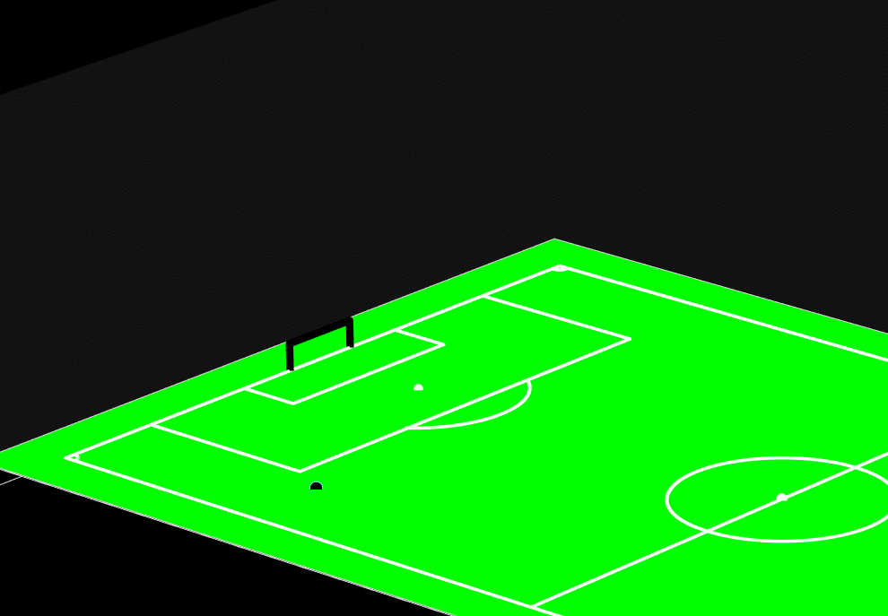

About Me
I’m a quantum physicist with a deep interest in data-driven systems
and automation tools. I completed my MPhil at the
University of Nottingham Malaysia,
where my research focused on two-qubit entanglement dynamics in
open quantum system
[1].
Currently, I’m working on bifacial solar energy projects, developing robust and reliable data logging
systems based on Linux. My primary focus is on the
Modbus communication protocol,
which plays a crucial role in modern solar technologies.
In the short term, my goal is to create a self-contained data logging framework that runs
seamlessly on any Linux distribution using either Modbus
TCP
or Modbus RTU.
The idea is to provide users with an installer and setup script
that automatically configures their system, enabling them to start logging data with minimal effort.
Users will only need to specify basic serial configurations such as
baud rate, stop bit, data bits,
and parity bit through a
simple JSON or YAML configuration file, while the system handles the rest
automatically.
Featured Projects
Modbus Logger
Full details available on my
Modbus Logger Github Page
Project Overview
This project focuses on developing a robust and customizable data logging system for solar monitoring
applications using the Modbus RTU communication protocol over RS485. It is designed to operate
reliably on Linux-based systems, providing users with a lightweight yet powerful solution for long-term
industrial data acquisition.
The system automatically collects, processes, and stores data from multiple Modbus-enabled devices
such as DC meters and inverters with minimal configuration. Users only need to define their device
parameters (baud rate, parity, data bits, and stop bits) in a simple configuration file, while the
script handles all communication, error handling, and logging operations seamlessly.
Personal anecdote
This project was inspired by a real challenge I encountered while assisting my supervisor with
recovering data hidden inside a mini PC used in a solar monitoring setup. The device had originally
been programmed to send data to a server in China, but the server was later shut down, leaving the
locally stored data inaccessible. Several attempts by previous students to extract the data were
unsuccessful.
When I was assigned the task, I initially found only partial
log files
containing data from a single month, which led me to suspect that older data had been deleted periodically.
Refusing to give up, I requested to borrow the mini PC for three days to perform a deep system analysis. While backing up the
files, I noticed a 22 GB file that couldn’t be transferred to my USB drive due to the
FAT32 file size
limit. Its large size immediately drew my attention, it was likely the raw data file. Upon inspection,
the file turned out to be binary and unreadable, so I began researching how to decode it, eventually
succeeding (with the help of ChatGPT) in a single day.
After successfully retrieving the data, I realized that the existing software which is developed for an outdated
Windows 7
environment, was unreliable for long-term operation. To make the system more robust and
maintainable, I formatted the mini PC and installed
Linux, then set
out to rebuild the data logging system from scratch.
I discovered that the devices communicated using the Modbus RTU protocol over
RS485,
so I quickly learned how to handle both the hardware connections and communication parameters such as baud rate,
parity, data bits, and stop bits. Using
Python,
I was able to read raw register values and decode them into meaningful
physical data. Through analysis, I identified the pattern behind the register structure, some used two 16-bit registers to
store 32-bit integers, while others stored floating-point numbers. Once I cracked that mapping, I successfully
restored full data access and built a new Modbus-based data logging system running on Linux, a more professional
and sustainable solution.
Three body simulation
Full project available on
Three Body Simulation Github Page
Project Overview
This project investigates the classical three-body problem, which is a long-standing challenge in celestial
mechanics that studies the motion of three massive bodies under their mutual gravitational attraction.
Unlike the two-body problem, which has an analytical solution, the three-body problem is nonlinear and chaotic,
meaning even small variations in initial conditions can lead to vastly different trajectories. This sensitivity
makes it a rich and fascinating subject in both physics and computational science.
The primary goal of this project is to simulate the motion of three bodies using numerical integration techniques.
The algorithm implemented here is the fifth-order Runge–Kutta method (RK4(5)), known for its balance between
computational efficiency and numerical accuracy. The method was manually constructed using the Butcher Tableau,
allowing for precise control over each stage of integration and providing a strong understanding of how adaptive
step solvers approximate continuous dynamics.

Figure: Numerical simulation of the three-body system using RK4(5) method.
The simulation begins with user-defined initial conditions including the positions, velocities, and masses of the
three bodies, which can be freely modified within the MATLAB code. From there, the system evolves over time through
the iterative application of Newton’s law of universal gravitation. The results are visualized as an animated orbit,
showing the continuous interaction and orbital exchange between the three bodies. The animation highlights key physical
phenomena such as orbital instability, center-of-mass motion, and the emergent patterns that occasionally resemble
periodic orbits.
This project serves as an example of how complex dynamical systems can be explored using relatively simple numerical
methods. It combines the core principles of computational physics, classical mechanics, and numerical analysis,
providing valuable insight into the unpredictable yet structured behavior of chaotic systems. The approach developed
here can also be extended to study n-body systems, orbital resonance phenomena, or energy exchange mechanisms in
astrophysical contexts.
Realistic Football Trajectory Simulation
Full project available on
Realistic Football Simulation Github Page
Project Overview
This project numerically simulates the realistic 3D trajectory of a football using the Euler integration method.
The simulation accounts for all key aerodynamic forces acting on the ball such as gravity, drag force, lift (Magnus)
effect, and drag moment to recreate lifelike motion during free kicks, corner kicks, and general play.
Built in MATLAB, the program allows users to specify initial conditions such as launch position, velocity, spin axis,
and lift coefficient. The simulation then visualizes how different spins (around the x, y, or z axes) influence the
flight path, showing phenomena like the famous “banana kick.”

Figure: Numerical simulation of the football using Euler method.
The model demonstrates the physical realism behind football aerodynamics by coupling Newton’s second law with aerodynamic
equations. The results show how the Magnus effect can cause the ball to swerve mid-air which is an effect exploited by
professional players to curve shots around defensive walls.
The final visualization includes a 3D-rendered football field where users can watch the simulated trajectory evolve in real
time, revealing how spin direction and air resistance shape the motion. This project highlights the power of computational
physics in connecting mathematics, coding, and real-world phenomena.
Other GitHub Projects
Full project available on
my GitHub page